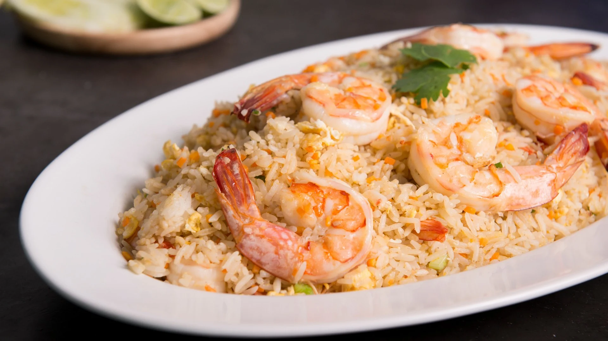

Shrimp Fried Rice

DESCRIPTION
Shrimp fried rice
is a popular dish with a delicious, rounded and fragrant taste. The sweet
shrimp and rice complement each other and are served with cucumber, lime,
and fish sauce chili to enhance the flavor. Our secret is to cook the rice
perfectly, then let it cool before stir-frying it with fresh shrimp and
seasoning until well combined, resulting in a delicious and flavorful
shrimp fried rice.
INGREDIENTS
(for 2 peoples)
- 150g fresh shrimp
- 2 cups of rice
- ½ teaspoon of ground black pepper
- 1 teaspoon of sugar
- 1 tablespoon of white soy sauce
- 2 eggs
- 2 sprigs of chopped green onions
- 1 tablespoon of cooking oil
- Shrimp stir-fry seasoning
- 1 tablespoon of chopped garlic
- ½ tablespoon of white soy sauce
- ½ tablespoon of fish sauce
- ½ teaspoon of ground black pepper
- 2 tablespoons of chopped onions
STEPS
-
Cook jasmine rice until it is fully cooked and not mushy. Then, set it
aside to cool.
-
Cut large onions into small pieces and chop the green onions. Finely
chop the garlic and set aside.
- Peel and devein the fresh shrimp, rinse them clean and set aside.
-
Prepare the seasoning mixture by combining sugar, black pepper, white
soy sauce, fish sauce, and vegetable oil.
-
Heat the wok over medium heat and add the vegetable oil. Once the oil is
hot, add the chopped garlic and onions, and sauté until fragrant. Then,
add the shrimp and stir-fry until they are cooked. Add the seasoning
mixture and continue to stir-fry until everything is evenly coated. Set
aside.
-
Heat the wok over medium heat and add the vegetable oil. Once the oil is
hot, crack the eggs into the wok and let them set for a moment. Then,
scramble the eggs until they are fully cooked.
-
Add the cooked jasmine rice to the wok and stir-fry until everything is
well combined.
-
Add the seasoning mixture to the wok with the rice, and continue to
stir-fry until everything is evenly coated.
-
Add the cooked shrimp and chopped green onions to the wok and stir-fry
until everything is well combined.
-
Once the dish is well combined, garnish it with cilantro and serve.